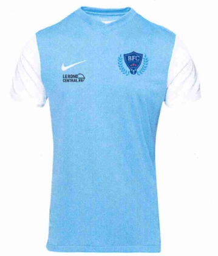

Présentation
Association loi 1901 dont le but est de promouvoir le futsal auto-arbitré pour les plus de 16 ans. Nous proposons des entraînements chaque vendredi et des rencontres organisées sous l'égide de la FSGT à Brest.
Rejoignez le BFC Brest Futsal Club pour pratiquer le futsal à Brest dans une ambiance conviviale et sportive.
Équipe
Équipe affiliée à la FSGT, avec des matchs et événements gérés par la Fédération Sportive Gymnastique du Travail.
Projets
À venir prochainement : développement de nouvelles sections, organisation de tournois amicaux, et collaboration avec d'autres clubs locaux à Brest.
Événements à venir
Planning en cours... restez connectés pour toutes les actualités futsal à Brest !
Contact
Pour toute information ou pour rejoindre le club :
Mr Wagner
Téléphone : 07 45 13 20 12
Email : steevens.wagner@gmail.com